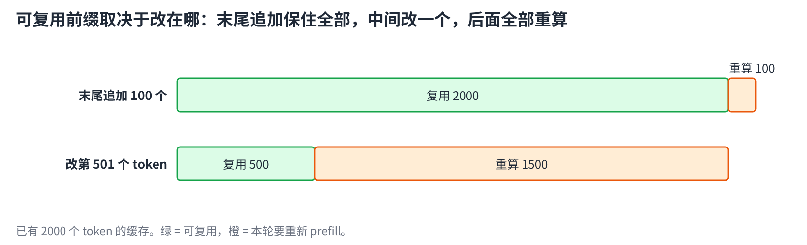
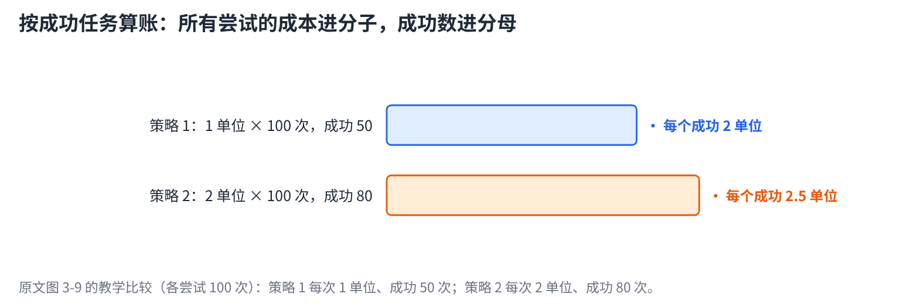
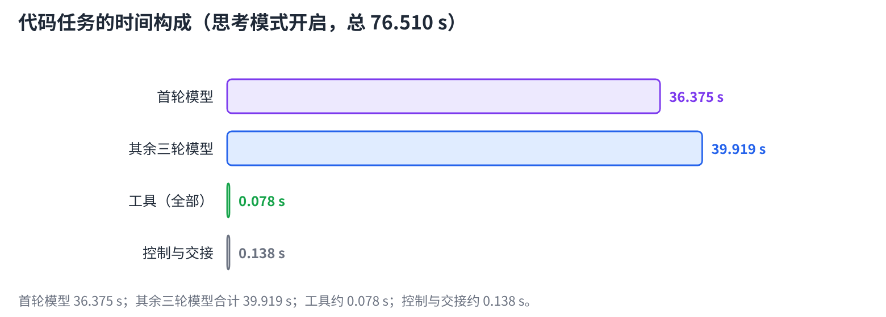
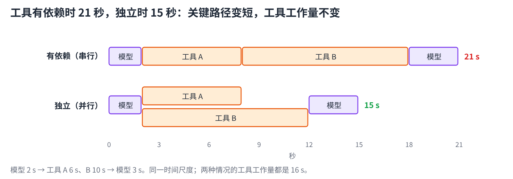
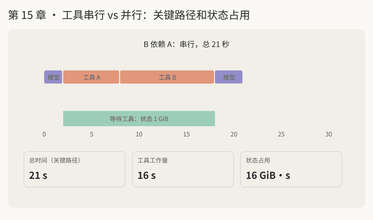

第 15 章 · 多轮交互与 Agent 任务：前缀、成功成本、关键路径
本地运行
git clone https://github.com/wikieden/ai-infra-from-constraints
cd ai-infra-from-constraints/code/notebooks
pip install jupyterlab torch numpy
jupyter lab ch15_agent_tasks.ipynb也可以下载后直接用 VS Code 打开 .ipynb 运行。需要 GPU 的章节在 Colab 里选「代码执行程序 → 更改运行时类型 → GPU」。
本章回答：多轮对话里，每轮真正要重新算的输入有多少？多花算力让模型"多想想"，什么时候划算？一个代码 Agent 的时间都花在哪，优化哪一段最有用？工具并行能省多少时间，又会多占多少状态？
讲解日期：2026-11-24 · 上一章：第 14 章 从单次请求到持续到达的负载 · 下一章：第 16 章 多模态与实时交互
对应原文：materials/ai-infra-book/manuscripts/03-推理与训练负载.md§3.2 L147–L279（例题 3-2、图 3-9 到 3-15）
本章缩写：CED = Causal Encoder-Decoder（因果 / 编码器 / 解码器）· KV = Key-Value（键 / 值）· LLM = Large Language Model（大 / 语言 / 模型）· RLCD / RLCR = 在强化学习奖励里加入 Brier 分数、让概率和实际正确率相符的训练方法（原文 L268）· SWA = Sliding-Window Attention（滑动 / 窗口 / 注意力）。全部缩写见 缩写与术语表
第 14 章把每个请求当成独立调用。对话和 Agent 任务里，同一个任务的多次调用前后相连：上一轮的回答、工具的输出都成了下一轮的输入。
讲解
第一步：多轮对话：每轮真正要重算的输入（2026-11-24）
类比：开连续剧的会。 每次开会都要先把前情提要过一遍。如果大家还记得上次的讨论（缓存命中），就只需要讲新内容；但新内容讨论时仍然要对照着前情（注意力仍要访问完整前缀）。
公式（原文 L156）：第 \(i\) 轮输入长度 \(I_i\)，可复用前缀长度 \(K_i\)：
代进第 07 章的公式：投影和 FFN 只处理新增的 \(P_i\) 个 token，注意力还要让新查询访问完整前缀。缓存减少重算，但没有把旧上下文从计算里删掉，还要一直保存它。
例子（原文 L161）：一个四轮代码修复任务，累计输入 5,297 个 token，命中 4,480 个，未命中 817 个。
| 方式 | prefill 矩阵运算（四轮合计） |
|---|---|
| 每轮都重算全部输入 | 76.196 TFLOPs |
| 复用已命中的前缀 | 11.976 TFLOPs |
第二轮输入 1,443 个、命中 1,392 个，只需处理 51 个新 token。
改哪里比改多少更要紧（原文 L163–L167）：
| 编辑方式 | 已有 2000 个 token 时，最长可直接复用的前缀 |
|---|---|
| 在末尾追加 100 个 token | 2000（只新增 100 行） |
| 改动第 501 个 token | 500（后面的表示全变） |
| 换工具定义或模板 | 可能从很靠前的位置就失效 |

图 15-1 · 两种编辑同样只动了少量 token，可复用前缀相差 4 倍。负载记录要包括稳定前缀、改写位置、分支依赖和复用间隔（原书第 8 章用）。
一句话：每轮要重算的是 \(I_i - K_i\)；能复用多少取决于改动发生在哪，而不只是改了多少字。
第二步：多花算力多想想，按成功任务算账（2026-11-24）
类比：考驾照。 便宜的驾校报一次 1 万元、通过率 50%；贵的驾校 1.5 万元、通过率 90%。算"拿到驾照平均要花多少"，贵的反而更省。
公式（原文 L178–L181）：每次尝试平均成本 \(c\)、成功率 \(p\)，重复尝试期望 \(1/p\) 次：
所有生成、验证、失败尝试的成本都要计入 \(c\)。
例子（原文 L187，简单假设）：新系统 token 单价降到 1/10，每任务用量涨到 20 倍，成功率从 50% 升到 80%。每个成功任务的成本比 \(= 20 \times \frac{1}{10} \times \frac{0.5}{0.8} = 1.25\)。单价下降、质量上升、成功任务成本上升，可以同时发生。

图 15-2 · 原文的教学比较：两种策略的成功任务成本分别为 2 和 2.5 单位。只看单次成本或只看成功率都会选错。
原文 L183–L185 还提醒两件事：数学题实验里把输出上限从 1024 提到 4096，两轮尝试仍没有一道通过评分，多生成不自动带来正确答案；检查答案要分开"格式对不对"和"内容对不对"。
一句话：比较推理策略要看每个成功任务的成本 \(c/p\)；成功率的相对提升要超过成本的相对增长才划算。
第三步：一个代码 Agent 的时间花在哪（2026-11-24）
类比：修车。 师傅看车、想办法（模型），助手拧螺丝、试车（工具），试车结果再告诉师傅。如果试车只要几秒，大部分时间都花在师傅"想"上。
原文 L211–L220：同一个代码修复任务（修区间合并函数），思考模式关和开：
| 观察 | 思考关闭 | 思考开启 |
|---|---|---|
| 模型调用轮数 | 12 | 4 |
| 总输出 token | 765 | 2,733 |
| 模型耗时合计 | 13.156 s | 76.294 s |
| 工具耗时合计 | 0.476 s | 0.078 s |
| 返回值正确且输入不变 | 315 / 1013 | 1013 / 1013 |
| 额外检查：子列表无别名 | 1 / 1013 | 710 / 1013 |
开启思考后 2,733 个输出里 2,553 个是思考 token。模型时间多了，但任务修好了。完成标准要具体到可执行的检查：多加一项"无别名"检查，结论就不一样。
例题 3-2（原文 L228–L230，Amdahl 定律，第 04 章）：总时间 76.510 秒，首轮模型 36.375 秒。把首轮减半，其余不变：

图 15-3 · 总时间 76.510 秒：首轮模型 36.375 秒，其余三轮模型合计 39.919 秒，工具约 0.078 秒，控制与交接约 0.138 秒（各轮明细见原文图 3-10）。
一句话：代码 Agent 的时间主要花在模型推理上，工具只占零头；优化收益取决于被缩短的那段原来占多少。
第四步：工具依赖、并行与分支的状态（2026-11-24）
类比：做饭时同时烧水和切菜。 两件事互不依赖就可以并行，总时间由慢的那件决定；但两件事的总工作量没少，而且灶台和砧板同时被占着。
例子（原文 L232）：模型算 2 秒 → 两个工具（6 秒、10 秒）→ 模型再算 3 秒。
| 工具关系 | 总时间 | 工具工作量 |
|---|---|---|
| 第二个依赖第一个（串行） | \(2 + 6 + 10 + 3 = 21\) 秒 | 16 秒 |
| 互相独立（并行） | \(2 + \max(6, 10) + 3 = 15\) 秒 | 16 秒 |
关键路径：从开始到结束累计耗时最长的那条路径，决定任务最早何时完成。

图 15-4 · 同一时间尺度的两条时间线。并行省的是等待，不是工作。
分支的状态（原文 L246）：共享前缀 \(H_0\)，第 \(i\) 个分支新增 \(h_i\) 个 token：
共享前缀只算一份（第 08 章的 KV）。并行缩短了关键路径，也让更多分支的状态同时占着内存；工具等待越久，状态驻留越久（第 14 章的 \(\lambda M_0 \tau\)）。
一句话：独立的工具可以并行缩短关键路径，但工作总量不变，同时占用的状态还变多。
第五步：负载反过来改模型：CED 和只做 prefill 的决策请求（2026-11-24）
类比：如果客人大多是"把一大摞材料交给你、只要一句结论"，就该把力气花在快速读材料上，而不是写长篇回复。
V4.1 Flash 的 CED（原文 L256–L258）：Agent 常常输入多、输出少。按专家层数计的工作量（从空状态输入 \(P\) 个 token）：
\(P = 8192\) 时 327,680 vs 166,400，约 50.8%；\(P \le 128\) 时没减少。
决策请求（原文 L266–L278，Jev 的例子）：调用方给一段状态和几个选择题，模型直接返回各选项的概率，只有 prefill，没有 decode。
| 同一条 1929 token 的请求（Qwen3-8B，H100 SXM） | 耗时 |
|---|---|
| 决策请求：一次前向约 28 TFLOPs，按 40% 算力效率 | 约 70 ms |
| 普通 LLM：prefill 后每步 decode 约 9 ms（50% 带宽效率），生成 64 个 token | 约 0.65 s |
省掉的是串行生成：延迟是 9 倍，但因为 decode 可以合批，GPU 时间只多约 28%。
转交的成本（原文 L278）：决策模型没把握的请求要转交 LLM，转交比例 \(e\)，每条平均费用 \(c_{\mathrm{dec}} + e\,c_{\mathrm{LLM}}\)。按演示的 0.000081 美元和 0.013880 美元，\(e\) 超过约 0.58%，转交费用就超过决策模型本身。
场景代码：只做 prefill 的"选择题"请求，用一次前向读出每个选项的概率（Hugging Face，示意）：
import torch
from transformers import AutoModelForCausalLM, AutoTokenizer
tok = AutoTokenizer.from_pretrained("Qwen/Qwen3-0.6B")
model = AutoModelForCausalLM.from_pretrained("Qwen/Qwen3-0.6B")
prompt = "工单：用户无法登录，已重置密码。\n问题：是否需要升级给二线？选项 A 是 B 否\n答案："
ids = tok(prompt, return_tensors="pt").input_ids
with torch.no_grad():
logits = model(ids).logits[0, -1] # 只做一次前向，看最后一个位置
choices = [tok.encode(c, add_special_tokens=False)[0] for c in ("A", "B")]
print(torch.softmax(logits[choices], dim=-1)) # 两个选项的概率，没有 decode
一句话：输入多、输出少的负载推动了 CED 这类"省 prefill"的结构；只要分类结果的任务可以完全省掉串行 decode，但转交比例要计入成本。
动画演示：工具串行 vs 并行，关键路径和状态占用

可交互版：animations/15-agent-tasks.html（滑块：两个工具各自的耗时；开关：工具之间有没有依赖）。
怎么看：
- 上面是时间线：模型 2 秒 → 工具 A、B → 模型 3 秒（第四步）；
- 有依赖时 A、B 首尾相接；独立时并排，汇合点等慢的那个；
- 下面是同一时刻占着的状态：等待工具时 1 GiB；两个分支并行时，各自的尾部状态叠加；
- 右边显示总时间、工具工作量和状态占用的 GiB·s。
练习与作答记录
题 1（第一步）：第 3 轮输入 3,200 个 token，其中前 2,950 个命中缓存。这一轮 prefill 要处理几个 token？如果用户把第 1,000 个 token 改了，最长可复用前缀和新输入各是多少？
作答记录：（待作答）
题 2（第二步）：策略 A 每次尝试 3 单位、成功率 60%；策略 B 每次 5 单位、成功率 90%。哪个每个成功任务更便宜？B 的成功率至少要多高才不比 A 贵？
作答记录：（待作答）
题 3（第三、四步）：一个任务：模型 4 秒 → 工具 A 8 秒、工具 B 5 秒、工具 C 3 秒（A 和 B 独立，C 要等 B）→ 模型 2 秒。总时间是多少？关键路径经过哪几个工具？把工具 B 加速一倍，总时间变多少？
作答记录：（待作答）
原书练习 3-3（L193–L197：成本 1 / 2 单位、成功率 50% / 80%，以及决策模型转交 1% / 5% 的费用）、练习 3-4（L250–L254：工具并行的 GiB·s，首轮 4 倍加速 vs 工具 2 倍加速）。想多练可以做。
口诀
前情提要记得住，新内容才要算；改中间一个字，后面全重来；
驾照算总账，花费除以通过率；
修车师傅想得久，助手拧螺丝几秒钟；
烧水切菜可并行，工作不少灶台全占。
本章复习卡片
I53（多轮前缀 \(P_i = I_i - K_i\) 与改写位置）、I54（成功任务成本 \(c/p\)）、I55（关键路径与工具并行）、I56（CED 与只做 prefill 的决策请求）。练习做完后，按答错、卡住的地方再补。
附录 · 延伸阅读
留给以后深入学习用，不影响本章主线。★ 是建议先读的。
推荐阅读
| 读什么 | 读哪里 | 读它为了什么 |
|---|---|---|
| ★ AII 第 3 章 | §3.2 L147–L279 | 本章原文，例题 3-2、图 3-9 到 3-15 |
| ★ AII 第 3 章"代码任务轨迹" | L711 起 | 代码修复任务每次工具调用的明细 |
AII 计算结果（原文 [^agent-calc]、[^decision-calc]） |
脚注链接 | 76.196 / 11.976 TFLOPs 和决策请求算例的逐项数据 |
| Snell 等, Scaling LLM Test-Time Compute Optimally（2024） | 第 3 节 | 推理时增加计算量的几种方式和收益 |
RLCR 论文（原文 [^rlcr]） |
方法一节 | 奖励里加 Brier 分数，让输出概率可以当置信度 |
| AII 第 8 章 §8.3.3 | 前缀复用 | 对话与 Agent 的前缀缓存怎么管 |
数学原理
- 几何分布的期望：成功率 \(p\) 的独立重复尝试，期望 \(1/p\) 次成功一次。
- 关键路径：依赖图里从起点到终点累计耗时最长的路径；串行相加，并行取最大。
- Amdahl 定律（第 04 章）：\(1/((1-f) + f/s)\)。
公式清单
| 公式 | 意思 |
|---|---|
| \(P_i = I_i - K_i\)，\(S_i = K_i\) | 多轮前缀复用 |
| \(C_{\mathrm{success}} = c/p\)；更省 \(\iff p_2/p_1 > c_2/c_1\) | 成功任务成本 |
| 串行 \(\sum t\)，并行 \(\max t\) | 关键路径 |
| \(M = c_{\mathrm{KV}}(H_0 + \sum_i h_i)\) | 分支共享前缀的状态 |
| CED 专家工作 \(= 20P + 20\min(P, 128)\) vs \(40P\) | V4.1 的输入处理 |
| 平均费用 \(= c_{\mathrm{dec}} + e\,c_{\mathrm{LLM}}\) | 决策请求加转交 |
代码对照：把本章的数字用代码算一遍
纯 Python，不需要 GPU。代码在仓库本地
ai-infra/solutions/chapter-code/ch15_agent_tasks.py，配套测试tests/test_ch15.py：
bash cd ai-infra/solutions/chapter-code uv run python ch15_agent_tasks.py # 一步一步打印 uv run pytest tests/test_ch15.py
讲义 ↔ 代码：
| 讲义 | 公式 | 写法 | 跑出来 |
|---|---|---|---|
| 第一步 改写位置 | 第一个不同的 token 之前 | reusable_prefix(old, new) |
追加 100 → 2000；改第 501 个 → 500 |
| 第二步 价格例子 | \(20 \times 0.1 \times 0.5 / 0.8\) | success_cost_ratio(...) |
1.25 |
| 第三步 例题 3-2 | Amdahl | amdahl_task(76.510, 36.375, 2) |
58.323 s，1.31 倍 |
| 第四步 工具 | 串行和 / 并行最大 | task_time([2, (6, 10), 3], parallel=...) |
21 s、15 s |
| 第五步 CED | \(40P\) vs \(20P + 20\min(P,128)\) | ced_work(8192) |
327,680 vs 166,400（50.8%） |
| 第五步 转交阈值 | \(c_{\mathrm{dec}} / c_{\mathrm{LLM}}\) | handoff_breakeven() |
约 0.58% |
关键几行：
def reusable_prefix(old, new):
n = 0
for a, b in zip(old, new):
if a != b: break # 第一个不同的位置之后全部失效
n += 1
return n
代码里才看得到的 3 件事：
reusable_prefix逐个比 token：改动之后哪怕内容一样，位置变了也算不同（真实缓存按 token 序列的哈希块判断，原书第 8 章）。- 例题 3-2 用的总时间 76.510 秒包含控制和交接时间，比模型 + 工具的 76.372 秒多一点。
task_time只处理"一段并行工具夹在两段模型之间"这种简单图；一般的依赖图要按拓扑顺序算最长路径。
自己改一改（不影响练习答案）：
- 把首轮加速从 2 倍改成 10 倍、无穷大，看总加速比的上限。
- 用
ced_work扫 \(P\) = 64、128、512、8192、131072，看 CED 的节省比例怎么变。 - 把转交比例 \(e\) 设成 1%、5%，算每条请求的平均费用。